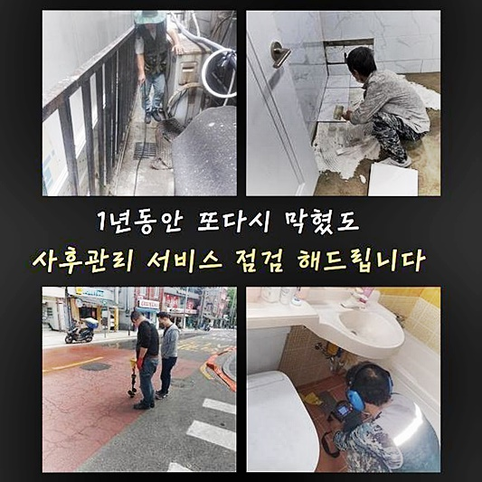
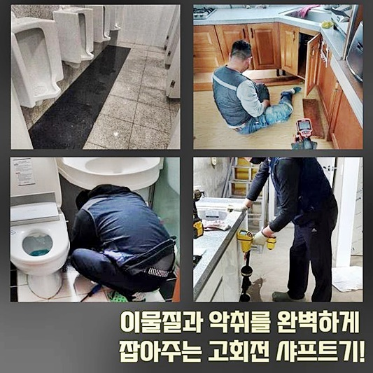
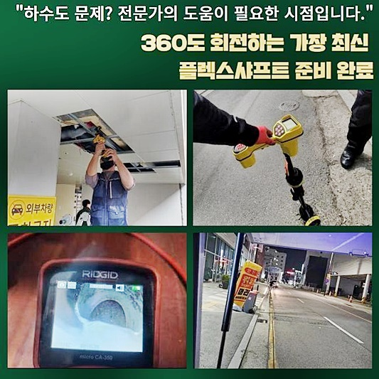
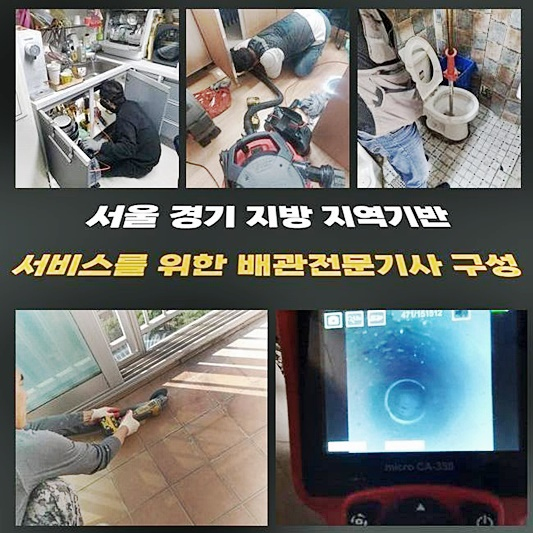
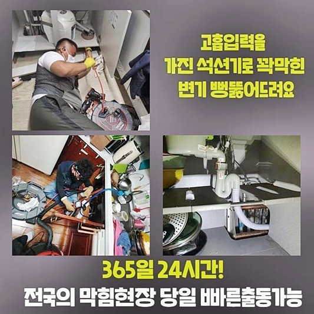
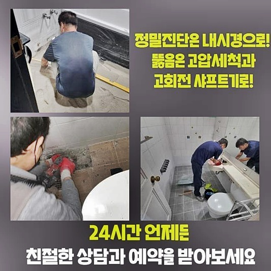
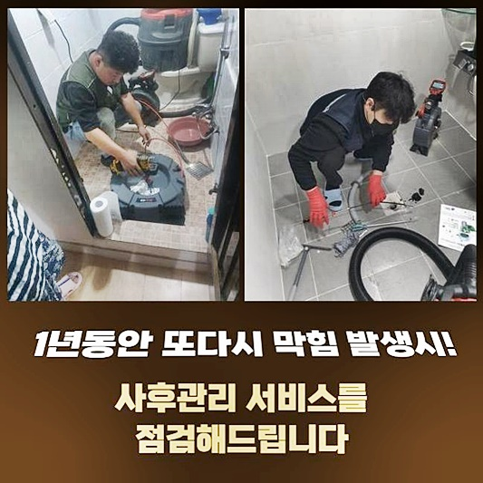

🏠 인천 만석동하수도막힘 금곡동 냄새차단 설비
용인시 처인구 배관막힘 전문 시공 후기

📋 작업 개요
- 위치: 용인시 처인구, 수원시 영통구, 화성시 동탄
- 서비스 유형: 배관막힘, 고압세척, 내시경점검
- 작업 일시:
- 업체명: 하수구수사대 (010-5615-2118)
🔍 문제 상황
인천 만석동하수도막힘 금곡동 냄새차단 설비
갑작스럽게 배관이 제 기능을 못하는 상황들이 발생되었다는 전화를 주시어 곧장 달려갔습니다
메인집수라인이나 배수구 등에 갖가지 증상이 생겨날 시 여러가지의 불편이 생길 가능성이 짙어서 저희의 전문가는 결함들이 더욱 깊어지는걸 막아드리고자 당일출동을 기초로하여 조속히 찾아뵌답니다
이제부터는 수리해드렸던 현장의 사례를 보아 막혀버리는 문제들이 발생되었을 때 그에 대한 전조와 시정하는 단계를 기름때를 일러드리고자 합니다
찾아뵈고 매립된 상황을 확인하니 지속적으로 관리등이 이뤄지지못해 이미 결함들이 커져버린 상황이라는걸 알았는데요
더군다나 막혀버린 오류를 걱정으로 역류문제까지 엎친데 덮친격으로 생기며 물 쓰는 행위를 할 수 없어 스트레스를 호소했죠
가벼운 막힘사태의 현장일 시 수월한 수습법으로 증상을 풀어가겠으나 알맞은 시점들을 놓치면 그 규모 역시 확산되면서 작업해야하는 범위까지 늘게 되요
막히는 통수장애들이 야기되는 원인의경우 깊은 부분에 자리한 슬러지들을 꼽게됩니다

🔎 원인 분석
💡 전문가 진단: 정밀 진단 장비를 사용하여 슬러지의 고착 여부를 판명하고 타격/세척 작업을 실시했습니다.
배수관의 경우 전체적인 배수에 필수적이고 적절한 부위에 매립해주어 생활하는 시점에 어려움없이 배수를 진행시킬 수 있게 되는거죠
하수관은 하수구들은 이런저런 기능을 수행하고 화장실과 같은 데에서 사용한 물들이 하수구들을 지나 빠져나가는데 수도사용의 과정에 있어서 야기된 오염물이 배출되며 배수장애를 일으키게 한답니다
오수관로의 오류도 변기로 투입된 잔해가 자리잡아서 생기게되요
물빠짐이 수월히 이뤄지지않아 연결부위마다 정체 상황들이 생겨난 등 욕실에서 알 수 없는 악취까지 불편을 가중시키면 문제들이 발발했다는 사안이라는 걸 아신 후에
바로 전문업체와 연유를 알아내어 적합한 대처로 배수관 복구를 속행하여야 해요
육안으로 상황들을 보니 관로들의 심층부에서부터 이물질들이 쌓여버린걸 까닭으로 문제들이 불거진 것으로 판단했습니다
그렇지만 하수관은 종합적인 연유로 야기되는 경우도 존재하므로 내시경기기를 투입시켜 어느 지점에 원인들이 있는지 확실히 밝혀내어 청소까지 마무리하는게 적합한 절차죠
내시경장비엔 렌즈와 연결되있기때문에 내측을 확실히 관찰할 수 있게되며 잔해물의 스팟과 이물의 양상들도 파악가능하기에 계획들을 세우는것에 도움이 됩니다

🔧 작업 과정
내시경장치를 통하여 구석구석 관찰하니 예측한대로 배수관과 메인집수 설비에 대량의 이물질들이 누적된걸 체크할 수 있었어요
더군다나 배관 구간별로 달라붙은 이물의 현장일 시 깊은곳에서부터 산패가 진행될만큼 심상치않은 형상이였습니다
하수관은 스프링장치나 샤프트기기를 써서 고착물을 분쇄해내서 간단히 완화되는 때도 있으나 지금의 경우처럼 곳곳마다 잔해물이 누적된 상태면 고압수청소로 기름슬러지를 청소시키는게 신속한 방식입니다
고압수분사는 막히게 되는 문제들을 해소시키는데에 탁월한 결과물을 보이지만 종종 비용들이 만만치않을거라는 이유들로 주저하시는 경우를 많이 보았어요
전문적인 기기와 기술들이 필요시 되기에 평이한 장비들을 쓰는것보단 약간의 비용들이 발생되는 것은 맞으나
문제들이 발발했을 경우 반복하여 기기를 투입하는 것보다는 고압세척들을 실시하는게 이물제거에 있어서 빠른 단계에요
그렇기에 고압세척들을 진행함이 어떻냐는 말을 들었다면 잊을만하면 나타나는 결함의 고리를 끊고자하시면 진행해보는걸 추천해요
배수가 안되는 증상을 해결하도록하는 청소는 배수관의 컨디션에 관해 계획은 차이가나지만 대부분 외측에 자리한 하수관에 노즐선을 투입시켜주며 유수의 반대길로 세척하죠
메인라인에서 작업들을 진행해주는건 하수도에 존재하는 고착물을 오차없이 제거하는것이기에 청소구간을 조금씩 넓히게되면 하수관을 설치시점의 컨디션과 흡사하게 복구시킬 수 있어요
하지만 하수관은 설치목적이나 위치에 따라서 소재등이 다를 가능성이 있고 사용한도가 길어지면 내구성들이 하락하게 되는데요
현장 환경을 염두에 두지않고서 무지각한 해결책으로서 진행한다면 파손을 자아내니 청소를 시작하기 전에 배수관의 자리를 관찰하고 그 차이를 두어 상이한 압을 쏴주는것이 필요합니다
이러한 디테일을 활용하는 전문가가 적당한 압들을 가하면서 반복되는 고압노즐분사를 시행하니 단단히 고착된 잔해물을 완전하게 없앴어요


✅ 작업 완료
워낙 잔해물이 흡착된 문제가 특히 심하여 역류될 기조들도 보였지만 아무쪼록 고객분이 조속하게 세척들을 요청해 주셔서 심화된 상태로 커가는건 막았죠
청소가 완료되면 내시경장치를 삽입해 반복성을 갖춘 점검절차들도 이행하고 있고 점검 과정속에서 놓친 지점이 있을 때엔 기기를 추가로 사용해서 잔해가 조금도 없게끔 확실하게 세척하니 염려하실 일은 없어요
통수오류가 발발했을 경우 조속하게 전문적인 해결책을 꾀하면 안정적으로 문제들을 완화시킬 수 있습니다
저희의경우 고객께서 수도를 쓰지못해 고민하시지 않게 아무때라도 도와드릴 준비들을 해놓고 있기에 문제가 버겁다면 편한 마음으로 전화주세요




⚠️ 하수구 배관 막힘 예방 및 관리 가이드
- ✅ 머리카락, 비닐, 물티슈 등 물에 분해되지 않는 이물질은 절대 흘려보내지 마세요.
- ✅ 기름기 많은 식기는 설거지 전 키친타올로 먼저 기름때를 닦아내세요.
- ✅ 주기적으로 배수구에 뜨거운 물을 가득 부어주어 유지방 고착을 방지하세요.
- ✅ 작업 후 1년 이내 재발 시 무상 A/S 보증 서비스를 제공합니다.
💡 핵심 정리
- 확실한 장비 작업(내시경 점검 및 샤프트 스케일링)으로 원인을 뿌리 뽑습니다.
- 작업 후 1년 이내에 동일한 부위 재발 시 100% 무상 A/S 서비스를 보장합니다.
- 서울 · 경기 · 인천 전 지역에 24시간 언제든 긴급 출동할 수 있도록 항시 대기 중입니다.
❓ 자주 묻는 질문 (FAQ)
🚨 용인시 처인구 배관막힘 문제로 고민이신가요?
정확한 원인 진단과 확실한 시공으로 재발 없는 해결을 약속드립니다.
24시간 긴급 출동 | 서울 · 경기 · 인천 전지역 | 1년 내 재발 시 무상 A/S